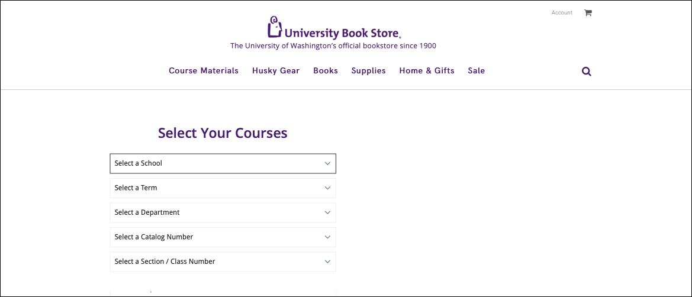
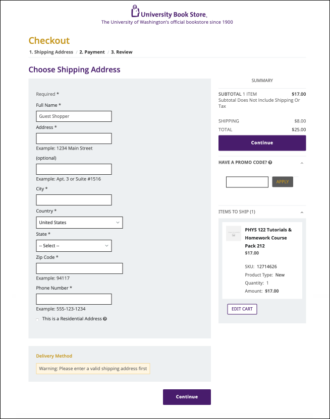

University Book Store
Redesign of Course Materials View and Checkout Process

Duration- April 2021, 2 weeks
Type- Solo project
Context- Course assignment (HCDE301)
Skills- Ui/Ux design and heuristics analysis
Type- Solo project
Context- Course assignment (HCDE301)
Skills- Ui/Ux design and heuristics analysis
Assignment Prompt
Use heuristics to do a usability analysis on your website of choice, then redesign it accordingly. I chose the University of Washington’s University Book Store’s website, and focused on the experience of viewing course materials and the check out process.
